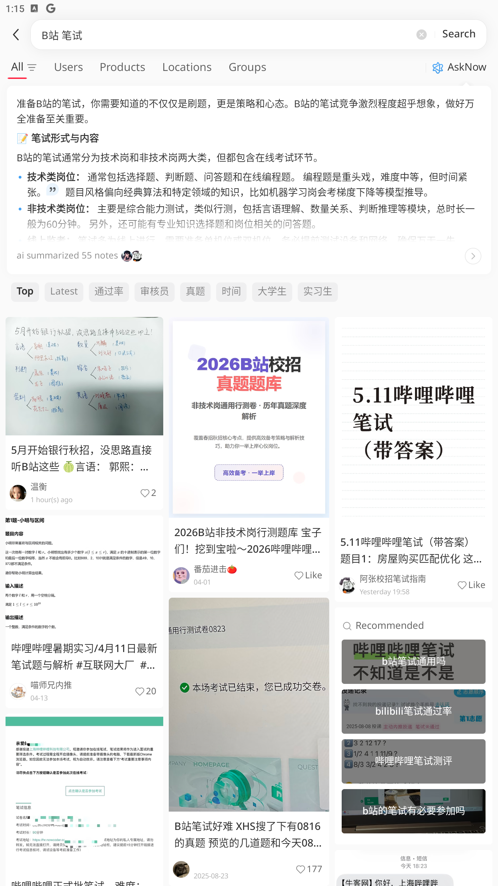

Final-semester UQ Business Management student. Four things I've made in my own time are below — one is live, so go click it.
A single-file web app I designed and built for UQ students. It reads live room-occupancy data and tells you where it's empty right now — real data, not a mockup.
Open the live app →It's running right here. Scroll inside it, or open it full-screen above.
Each runs on its own. Some I built from scratch, some I wired together from open-source — all of them I operate daily. (No engineering background.)

One command and it researches Xiaohongshu (China's biggest discovery app) for me — it drives a real phone to search, reads the posts, and writes the findings into my notes.
Fast & deep modes. The screenshot is it mid-run: searching, then auto-summarising 55 posts.
“Both sides restart high-level talks; a leaders' meeting yields mutual tariff cuts — but tariffs stay the core bargaining chip.”
An open-source prediction engine that turns the day's news into a structured forecast. I run it on a daily automation — it briefs itself every morning while I sleep, and posts the result.
Engine by 666ghj/MiroFish. The daily pipeline around it is mine.
My personal operations desk: five AI agents that research, draft, trade and report on their own — around a dozen scheduled jobs, with failure alerts and self-recovery.
Built on the open-source OpenClaw runtime. The agents, routing and schedules are mine.
Tuned to AMBC — a national peak body working across government, ASX-listed members, scale-ups and universities.
Auto-track ASX announcements, critical-minerals policy and member news → one tight weekly brief, plus ad-hoc alerts. I already run monitors like this.
Voice notes and rough dot points → drafted emails, LinkedIn posts and briefs, in the house voice. “Messy input → structured output” is the thing I do most.
Research → draft → your review, on a repeatable cadence — so the content engine runs whether or not it's a busy week.
It read my project files, drafted the copy with me, and shipped it. That's the honest answer to “how do you use AI?” — not as a magic box, but as the instrument I reach for first.